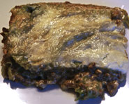

Lasagna

Description
This is the most delicious lasagna you will ever eat, TRUST ME. It comes out looking just as tantalizing as the picture, every single time.
My grandpa came up with this recipe during his 20 years in prison for intentionally poisoning 12 people with Italian foods. Made from always interesting and resourceful ingredients.
Ingredients
- 12 Lasagna Noodles (whole grain)
- 4oz FF Mozzarella
- 15oz Part Skim Ricotta
- 1oz Parmesan Cheese or Grana Padano
- 1 lb Lean Ground Turkey
- 2 C Crushed Tomato
- 1 1/2C Water
- 1 Onion
- 2 Garlic Cloves
- Fresh Parsley
- Garlic Powder
- Dried Oregano/Basil/Bay Leaf
- Salt/Pepper
Steps to Success
- Saute onion & garlic, add ground meat (Season salt/pepper). When meat is almost done, add crushed tomatoes, water and dried herbs.
- Boil lasagna sheets for about 10 min in heavily salted water.
- Mix ricotta, 1/2oz of Parmesan, garlic powder, salt/pepper, parsley.
- Assemble lasagna, 4 layers of meat sauce, 3 layers of noodles, 2 layers of ricotta.
- Add mozzarella on top
- Bake for 30min at 400F covered, then 30 min uncovered.
- Rest for 30min before cutting.